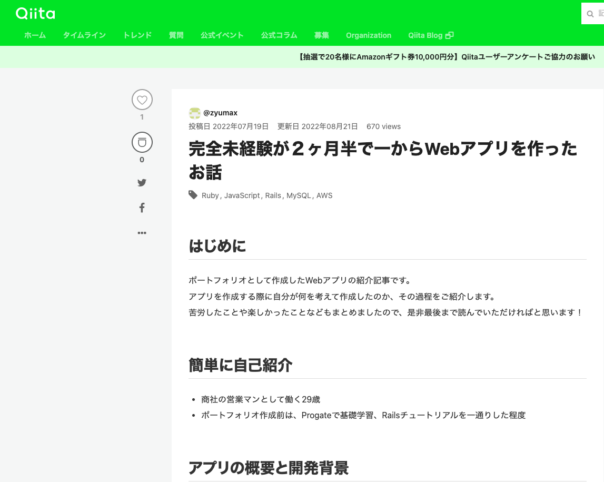

杉江一真 Portfolio Site
about me
パーソナル情報
杉江 一真（すぎえ かずま）
1993年02月23日生まれ / 29歳
経歴
- ・2016年3月 ： 関西学院大学 理工学部 物理学科 卒業
-
・2016年4月 ： 向洋電機株式会社 就職
入社後、作業責任者として、施工管理業務に従事し、協力会社と連携を取りつつ、システムのリプレース作業を実施しました。 その後、営業部署へと異動となり、既存顧客への提案営業を担当してまいりました。化学メーカー、インフラ関連の顧客を担当してきました。定期的に訪問し、顧客とコミュニケーションを取ることで、ニーズを把握し受注に繋げてきました。
- ・現在転職活動中
IT学習経験
- フロントエンド： HTML,CSS,JavaScript
- バックエンド ： Ruby,Ruby on Rails
- インフラ ： AWS(VPC・EC2・RDS・ELB・IAM・Route53・ACMを使用)
- DB ： MySQL
どの様な業務をしたいか
ユーザーの課題解決をサポートするシステムの開発に携わりたいです。
その為に必要な言語やスキルを常に取り入れていける環境で働きたいです。
どの様なエンジニアになりたいか
ユーザーが不便と感じている部分を取り除くことで、ユーザーに新たな時間を提供できるエンジニアになりたいです。 そう思うようになったのは、私が現職でシステムにより業務が効率的に行えるようになった経験があったからです。 現職では、お客様に提出したお見積は、システムを使用して管理しておりますが、受注後に購買先へ注文書を発行する際は、システムを使用せずExcelで手打ちをして作成しており、同じ業務を二度行わなければならない運用をしておりました。 そんな折、新しいシステムを導入したことで、管理していたお見積り情報から注文書を自動で発行できるようになりました。これにより、二度手間となっていた上記の業務が簡略化され、業務効率を上げることができました。 このように、システムの効率化を実現できれば、ユーザーに時間を提供できると考えます。時間を提供することで、本来やるべき別の業務や、自分のやりたいこと（資格取得や自己啓発、趣味など）に時間を費やすことができるようになると思います。 一つのシステムを改良するだけで、こんなにも業務効率を上げられるものかと、システムが課題を解決する力に対して感銘を受けました。 ユーザーに時間を提供できるエンジニアになるために、以下のことを実現できるようになりたいと考えています。
- 誰がどのように困っているか、課題を見つけることができる
- ユーザーの課題に対して技術で応えることのできる
自己PR
1.コミュニケーション力
聞くことに重きを置き、営業活動を行ってきました。 お客様の課題をヒアリングする際には、製品の紹介だけでなく、他社事例の紹介であったり、お客様が回答しやすい質問を事前に用意することにより、お客様が話しやすい雰囲気を心がけました。その結果、お客様から細かいことでも相談をいただけるようになり、受注に繋がることが多くなりました。
2.主体的に行動する力
課題を達成するために、進んで行動をします。 新製品の重点拡販責任者を務めた際に、受注目標を達成するために、メーカーと協力し、勉強会の開催やセールストークの例を作ることで、営業のメンバーに製品を紹介してもらえるように行動をした結果、受注目標台数比110%を達成しました。
3.調整力
他者の意見をまとめ、合意形成を行いました。 お客様から急な工程変更の依頼があった際に、お客様の意見をただ聞くのではなく、工程変更をすることで協力会社の方の作業に支障がないかを確認してお客様と納期を交渉し、双方の意見を取り入れて納期を調整することで、全員が納得する形で業務を遂行しました。
個人開発実績
Wantest
制作したアプリへのリンク
アプリの概要
- ・自分の欲しいものを管理して支出予測するアプリ
- ・欲しいものを登録して一覧化し、その合計金額を表示させる
ソースコード
GitHubこだわりポイント
- ・使いやすさを意識したUI/UX
- ・Ajaxを用いて画面遷移をせずに情報を更新させる
- ・メジャーなアプリのデザインを参考にする
Qiitaへ技術記事投稿
投稿したQiita記事の一部
{kind=link}
こだわりポイント
- ・ポートフォリオ作成過程をアウトプット
- ・現在1記事投稿
- ・今後も勉強した内容を積極的にアウトプットしていく
→新しい知識をインプットしアウトプットする事を常に意識しています